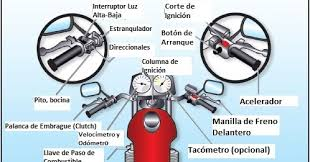
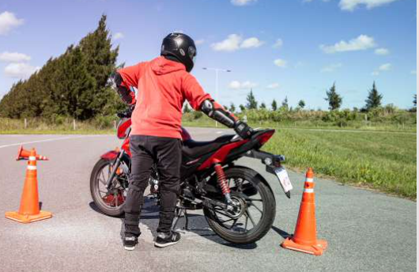
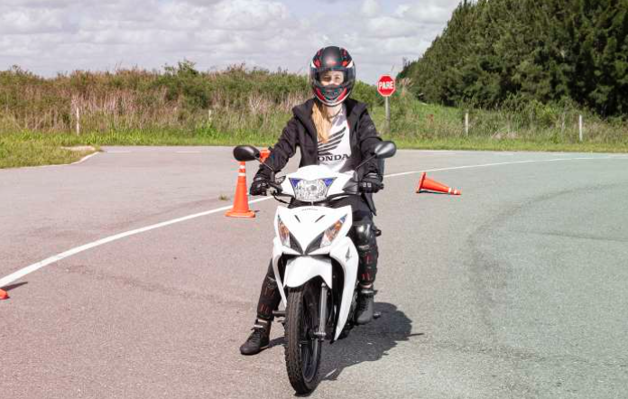
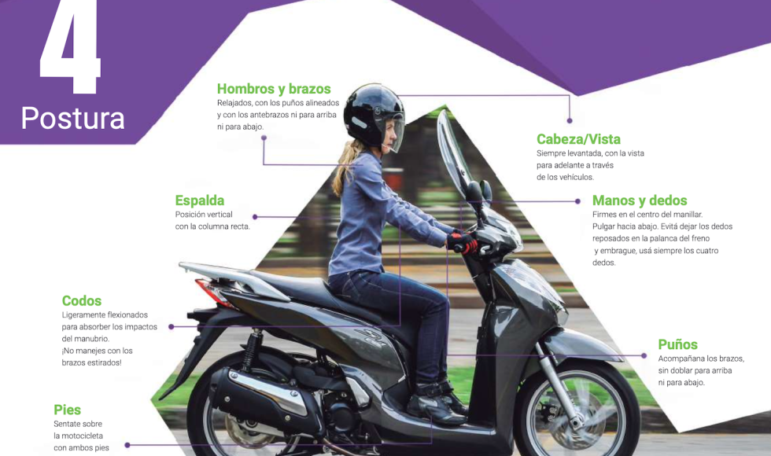
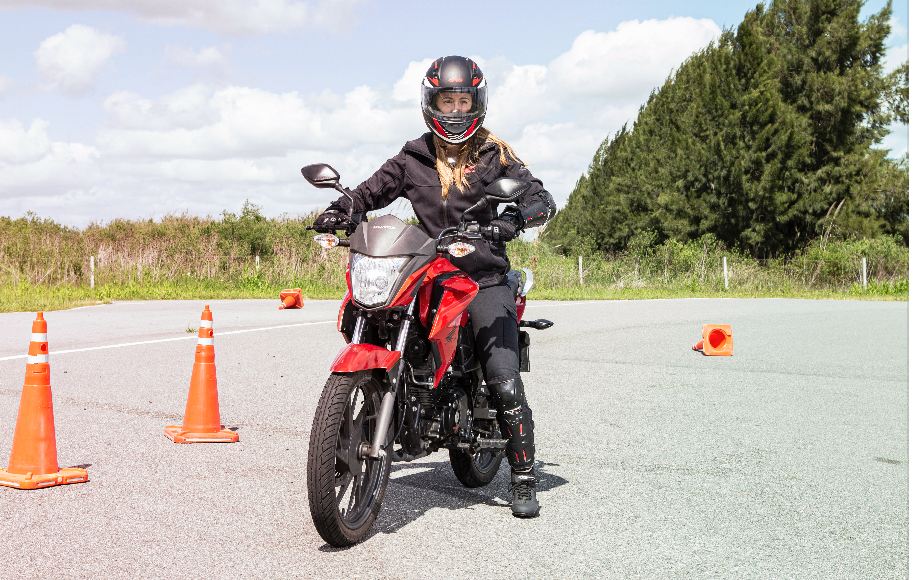
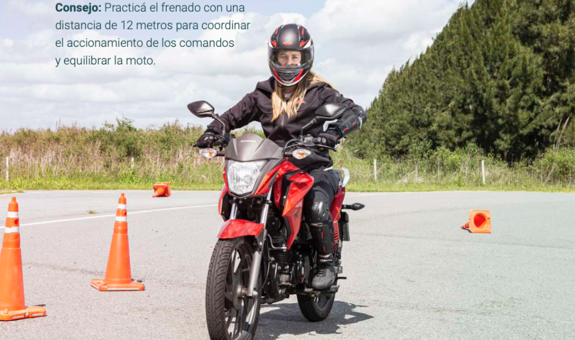
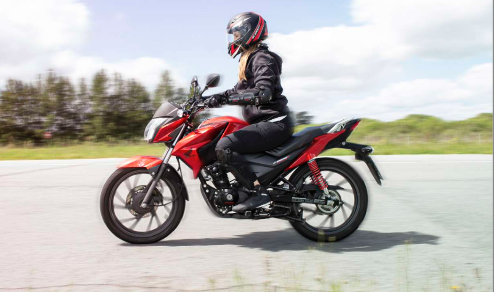
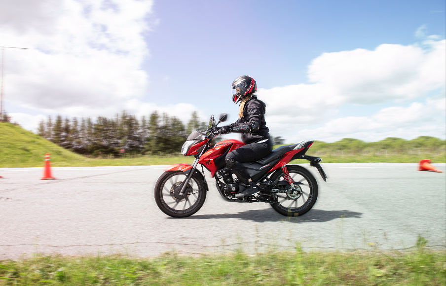
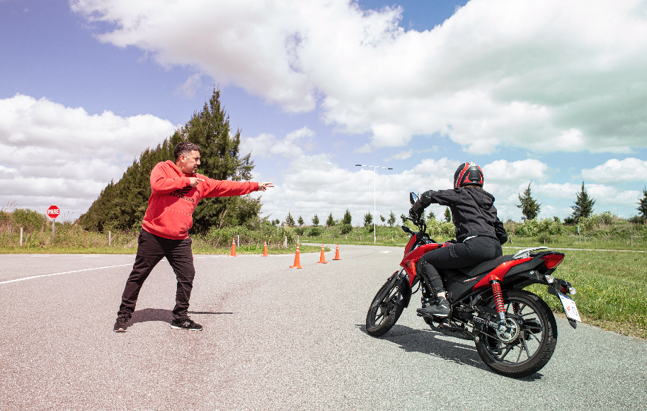

LOS 10 PASOS BÁSICOS PARA MANEJAR UNA MOTO
La moto ganó mucha presencia en nuestra calles, son mucho más baratas que un auto, su mantenimiento es más económico y ofrecen grandes comodidades para el día a día. Te compartimos los pasos básicos para aprender a conducirlas con seguraridad.
Si bien esta alternativa cada vez tiene más adeptas, es muy importante contar con todos los elementos de seguridad, tomar hábitos saludables y aprender a conducir seguras. el 40% de las víctimas fatales estaban arriba de una moto. Por ello es vital el programa “Safety Argentina” de Honda, que con el objetivo de disminuir el número de víctimas fatales en accidentes de tránsito en nuestro país , apunta a la educación vial de las que recién se inician en la conducción de motos. Pero esta info. también es útil para que las más experimentadas sepan cómo trasmitir sus conocimientos, y qué cosas deben enseñárseles a los principiantes. Lo primero que debes saber es que es importante contar con toda la vestimenta y protecciones adecuadas, y siempre llevar casco. Además de ser obligatorio, salva vidas. Ingresá acá para saber qué tener e cuenta a la hora de elegirlo.
COMANDOS
Es importante conocer todos los comandos de la moto y dónde están ubicados, para luego saber cómo y cuándo accionarlos.

PRIMER CONTACTO
Pararse junto a la moto por el lado izquierdo, tomar el manillar y empezar a empujarla y manipularla, es clave para ir practicando la estabilidad. Para esto, la moto debe estar inclinada con el asiento apoyado sobre tu cadera, los codos abiertos y los pies separados para distribuir el peso y mantener el equilibrio. Y para girar, mové el manubrio lentamente
Paso a paso:
Posiciónate del lado izquierdo de la moto y colocá las dos manos en los puños con el manubrio recto. Mano derecha lista para accionar el freno si fuese necesario.
Colocá el manubrio en posición recta con la mano izquierda.
Apoyá la mano derecha en la agarradera trasera y levantá el brazo con el codo cerrado.
Bajá el caballete central con el pie derecho, hasta que sientas que está completamente apoyado en el piso.
Empujá la motocicleta para adelante y empujando la moto hacé un trayecto en forma de ocho.

MOTO EN EL CABALLETE
Subite, bajate, y con la moto apagada, simulá los comandos de embrague, acelerador y frenos. Realizá la secuencia de cambiar las marchas para familiarizarte con la moto.
Tips.
Subí por el lado izquierdo de la moto.
Apoyá ambas manos en el manillar y, con la mano derecha, accioná el freno delantero. Familiarizate con la posición de manejo.
Con la moto apagada, simulá los comandos de embrague, acelerador y frenos.
Realizá la secuencia de cambiar las marchas (1-N-2-3-4-5) y cómo encontrar el punto muerto.
Girá la llave de contacto con la transmisión en punto muerto.
Apretá el botón de arranque y encendé el motor.
Para detener el motor, girá la llave de contacto a la posición OFF.
Encendé el motor.
Apretá el embrague, cambiá a la 1a marcha y mantené el freno delantero presionado.
Soltá progresivamente el embrague y prestá atención al tiempo del motor.

POSTURA
Visión al frente, espalda semi erguida, hombros y brazos relajados apuntando hacia afuera, manos en el centro del manillar, codos semi flexionados, pies rectos en el pedalín, una buena postura te brindará un manejo más cómodo y seguro.
En detalle:
Hombros y brazos. Deben estar relajados, con los puños alineados y con los antebrazos ni para arriba ni para abajo.
Espalda. Bien vertical, con la columna recta.
Cabeza. Siempre levantada, con la vista para adelante.
Manos y dedos. Firmes en el centro del manillar. Evitá dejar los dedos reposados en la palanca del freno y embrague, usá siempre los cuatro dedos.
Puños. Acompañan a los brazos, sin doblar para arribani para abajo.
Codos. Deben estar ligeramente flexionados para absorber los impacto del manubrio. Conducir y parar ¡No manejes con los brazos estirados! Pies.
Sentate sobre la moto con ambos pies apoyados en el piso.

CONDUCIR Y PARAR
Sincronizá el acelerador con el freno delantero. Repetí el ejercicio hasta obtener la sincronía correcta.
Mantené los codos abiertos para fuera, accionando los comando de freno y embrague con los cuatro dedos.
Sentate en la moto con ambos pies en el piso, acelerá de a poco y soltá el embrague lentamente.
Salí con el pie derecho en la pedalera, el izquierdo se mantendrá en contacto.
Cuando la moto se mueva para adelante, colocá el pie derecho sobre el pedal del freno trasero.
Accioná al mismo tiempo el freno trasero y delantero, y pará la moto suavemente.
Repetí el ejercicio, apoyando los pies en los pedales y, al parar, apoyá el pie izquierdo en el piso.

FRENADO
Practicalo para coordinar el accionamiento de los comandos. Rodillas ajustadas al tanque, freno trasero en simultaneo con el freno delantero y a ultimo momento se aprieta el embrague para que no se apague la moto.
Si lo hacés con el lado izquierdo
1-Mantené los dedos de la mano izquierda cerrados sobre el manillar.
2-Cuando la moto esté casi detenida, apretá la palanca de embrague con los cuatro dedos.
3-Al detenerse, apoyá el pie izquierdo en el piso.
Lado derecho
1-Soltá el acelerador completamente.
2-Accioná la palanca de freno delantero con los cuatro dedos progresivamente.
3-Con el pie derecho, accioná el freno trasero sin dejar que se trabe la rueda.

CAMBIO DE MARCHAS
Realizalo varias veces con la moto detenida para familiarizarte con el comando. Poner primera y salir es de las cosas más difíciles de aprender, no te frustres, es cuestión de tiempo.
Paso a paso:
No mires el panel ni la palanca de cambios.
Antes de cambiar de marcha, soltá el acelerador.
Accioná el embrague hasta el final con los cuatro dedos en la palanca izquierda.
Soltá el embrague y aumentá gradualmente la aceleración.
Para reducir la marcha, soltá el acelerador.
Apretá el embrague para bajar el cambio en la reducción de marcha.
Soltá el embrague progresivamente para que no haya corcoveo.
En caso de querer parar, apretá los dos frenos y al final el embrague para que no se apague.

VELOCIDAD
No te dejes engañar por tu autoconfianza. Si sentís incomodidad con la velocidad, soltá el acelerador y accioná los comandos de los frenos progresivamente.

CURVAS
Ajustá la velocidad para entrar. Siempre utilizá una marcha menor para mantener la moto en tracción, es conveniente que te abras un poco en la entrada de la curva para no invadir el carril contrario en el momento de la máxima inclinación. Y así poder fijar la mirada en el final de la curva, barriendo con la vista toda su extensión.
Mantené la aceleración constante sin accionar el embrague ni el freno (para no quitarle tracción ni perder estabilidad). Incliná la moto para el lado interno de la curva.
Retomá gradualmente la aceleración para retornar a la posición vertical. Observá que una trayectoria correcta facilita la ejecución de una secuencia de curvas.

EQUILIBRIO Y APLICACIÓN DE TODOS LOS EJERCICIOS
Relajá los hombros y los codos.
Prestá atención a la postura correcta del cuerpo al ganar un poco de velocidad.
Antes de aumentar la velocidad, practicá el ejercicio de frenado de aproximación (cuando sabés el lugar donde detenerte) y el frenado de emergencia (factor sorpresa).
Utilizá la dirección de la mirada para donde querés ir, no mires fijamente ningún obstáculo.
Distribuí el peso de tu cuerpo de manera uniforme, no te inclines de más.
Pará la motocicleta en línea recta, no dejes que el manubrio gire.
Al parar la motocicleta, para quienes sean de baja estatura, acomodá la cadera para un costado, así vas a lograr apoyar el pie completamente en el piso.